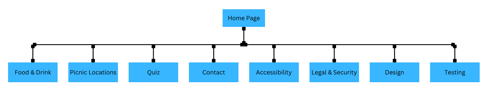
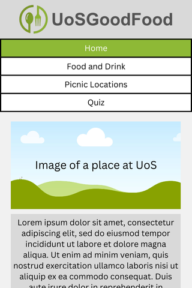
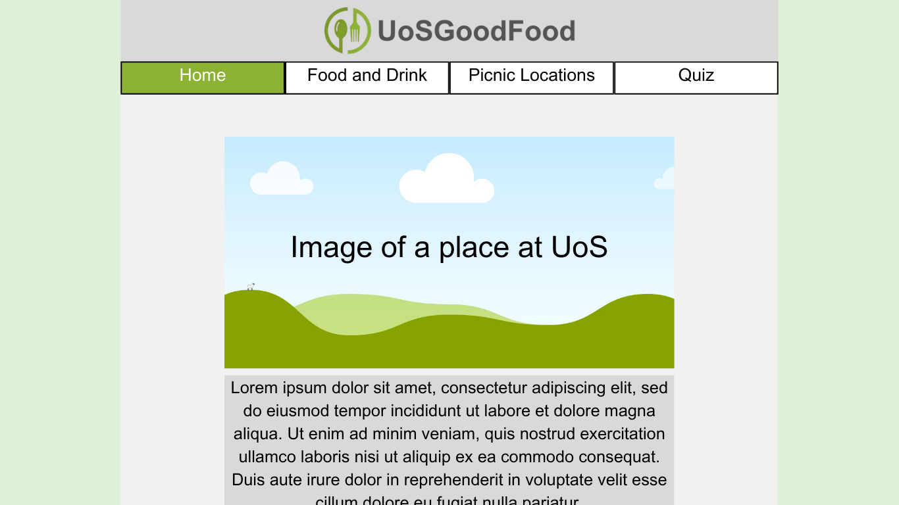

This page shows the design process I went through before developing my website.
Introduction
My initial idea for the website is for it to be cheerful and welcoming to any visitors, as the aim of the website to inform and guide people on the best places to get food & drinks, have a picnic, and to take a fun, interactive quiz. This means I will be creating a clean and attractive website with interesting elements, which should make the users more engaged.
Site Map
This website is an information page and is simple in essence, so only has two levels of pages. All the links to each page are on every single page as there aren't many.

Design Mock-Ups


These are the mock-ups for my website design, made using Canva. I went for a sleek design that’s simplistic but also aesthetically pleasing. I made sure to use the same colours in the logo as the main colours for the website’s elements, such as the lighter green for a selected element and the darker green for when you are hovering over an element to select. I have also tried to make sure the shade of grey for the paragraph background isn’t too dark so there is good enough contrast in relation to accessibility as well.
I have only created one design mock-up for mobile and desktop as each page design will look almost the same, just with different content. I have the main idea down, so I can get started on the actual programming of this design.
I intend to use a flexbox for my nav bar, so at a specific breakpoint (e.g. > 500px width), the flex layout will change from a column to a row. I may also use a few tweak points here and there to try and keep a consistent-looking page as the viewport width increases/decreases, for example, I will set a maximum width for the wrapper element to prevent the website content from being stretched out too far. This is demonstrated in the desktop design mock-up, since the sides of the website actually stop at a specific point (e.g. 1000px).
Of course, since this is Mobile-First Responsive Web Design, I will first be designing each page on the dimensions of a phone screen, then using media queries to scale any of the elements appropriately. This will make sure I have a consistent design that looks good on both mobile and desktop (or anything in between).
Menu System
As described in the design mock-ups section; I will use a flexbox for my nav bar. This means I can have the nav bar be a column on mobile but a row on desktop, this is known has a 'responsive nav bar' menu system in the HTML/CSS world. I chose to do this as I only need to have 4 links for navigation at the top, any more and I would consider a 'burger-style' drop-down menu to be more appropriate.